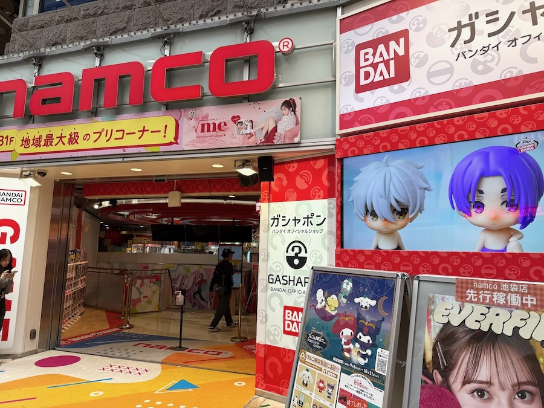
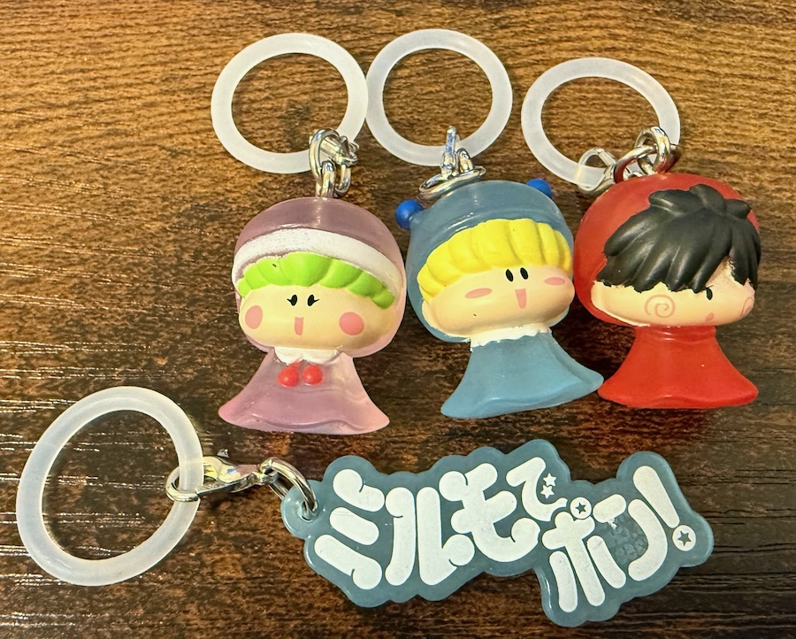
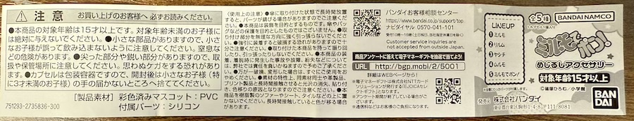

２０２４年１０月２５日から、バンダイより『ミルモでポン！ めじるしアクセサリー』が発売されました。
バンダイからは３回目のグッズ発売で、すっかりお馴染みになった感じがします。
私も１０月２６日に池袋でゲットしましたので、以下にレポートいたします。

以前ましゅもっちをチェックした池袋駅東口の「ｎａｍｃｏ池袋店」でゲットしました。

店内のガチャコーナーに行くと、めじるしチャームのガチャガチャ台をあっさり発見！（このお店には２台ありました）
そして「お待ちの方がいる場合は購入制限５回にご協力下さい」という貼り紙も！
他のガチャ台には貼られていなかったので、これはミルモが大人気商品扱いということでしょーか！

ラインナップはミルモ・ムルモ・リルム・ヤシチ・ミルモでポン！（ロゴマーク）の全５種。
さて私のゲット結果はというと、写真の通りムルモが出ませんでした〜〜〜(泣)
１０回も回してムルモが１回も出ないとは、ムルモの呪いがかかっているのか・・！？
今回はムルモが一番欲しかっただけに、どこかでゲットせねば〜〜っ(^◇^;)
商品の方は、傘に付けることが想定されているからか、妖精たちがレインコートを着ていてかわいいです！
めじるしチャームの素材はＰＶＣ（ポリ塩化ビニル）でできていて（輪っかはシリコン製）、触り心地はスマホに付けるカバーのような感触でしょうか。
透明度のある素材に、妖精の顔が細かく塗装されていて、バンダイの技術力の高さを感じます。
今回は主役４妖精に加えて、なんとミルモでポン！のロゴマークがラインナップ。
ロゴマーク単体がグッズになっているのは今まで見たことなかったような。

妖精たちの横側を撮影。
ヤシチの頭巾の結び目もしっかり再現されています。
ＰＶＣ素材なので強度も問題なさそうです。

同封の解説書です。
いかがでしたでしょうか？
今回もバンダイらしい高品質のグッズとなっていますので、見つけたらぜひゲットしましょう！
そして今後発売されるであろうグッズにも期待が高まりますね（私的には「まちぼうけ」シリーズがそろそろ出ると予想〜）
(2024/10/26)